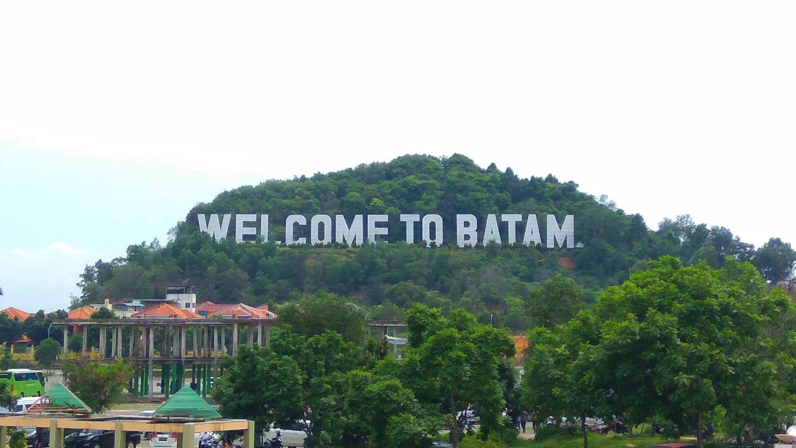
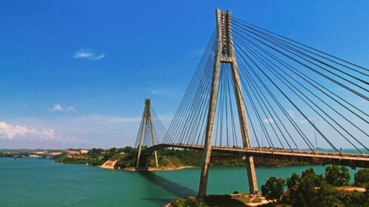
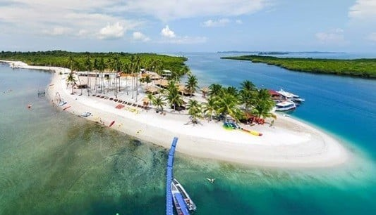
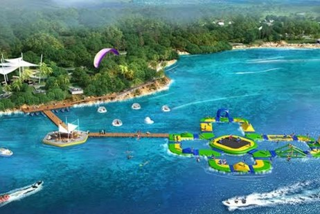
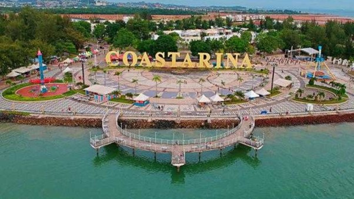

Sejarah

Pulau Batam pertama kali dihuni
oleh orang Melayu yang disebut
orang selat sejak tahun 231
Masehi dan pernah menjadi medan
perjuangan Laksamana Hang Nadim
melawan penjajah. Pada dekade
1960-an, Batam mulai digunakan
sebagai basis logistik minyak
bumi di Pulau Sambu. Secara
geografis, Batam adalah salah s
atu dari 329 pulau di Kepulauan
Riau, terletak antara Selat
Malaka dan Singapura.
Catatan tertulis tentang Batam
sangat langka, namun disebut
dalam Traktat London dan laporan
pesiar dari China. Sebelum
mendapat perhatian dari
pemerintah pusat, Batam
merupakan pulau hutan belantara
dengan sedikit penduduk yang
bekerja sebagai nelayan dan
petani. Pada dekade 1970-an,
Batam dikembangkan sebagai basis
logistik dan operasional
industri minyak dan gas oleh
Pertamina.
Presiden Nomor 41 Tahun 1973
mendukung pengembangan Batam
oleh Otorita Pengembangan Daerah
Industri Pulau Batam (sekarang
BP Batam). Pada dekade 1980-an,
status Batam ditingkatkan
menjadi Kotamadya Batam
berdasarkan Peraturan Pemerintah
Nomor 34 Tahun 1983. Pada akhir
dekade 1990-an, melalui
Undang-Undang nomor 53 tahun 1999,
Batam menjadi daerah otonomi
Pemerintah Kota Batam, bekerja sama
dengan BP Batam dalam fungsi
pemerintahan dan pembangunan.
Geografis

Kota yang merupakan bagian dari
Provinsi Kepulauan Riau ini,
memiliki luas wilayah daratan
seluas 715 km², sedangkan luas
wilayah keseluruhan mencapai
1.575 km². Kota Batam beriklim
tropis dengan suhu rata-rata 26
sampai 34 derajat celsius. Kota
ini memiliki dataran yang
berbukit dan berlembah.
Tanahnya berupa tanah merah yang
kurang subur dan cuaca yang sering
berubah sehingga untuk dijadikan
lahan pertanian hanya tanaman yang
dapat tumbuh tanpa mengikuti musim.
Batas-batas Kota Batam
| Utara |
Selat Singapura dan Singapura |
| Timur |
Pulau Bintan dan Tanjung Pinang |
| Selatan |
Kabupaten Lingga |
| Barat |
Kabupaten Karimun |
Wisata
Batam telah dikenal sejak
lama sebagai salah satu
pulau dengan banyak daya
tarik wisata. Tak hanya
memiliki alam yang indah,
seperti kebanyakan pulau di
Indonesia yang dikelilingi
laut, namun juga pesona
wisata belanja yang
ditawarkan begitu
menggiurkan. Wisata Batam
sendiri sebenarnya banyak
yang terbilang unik,
sehingga Sobat Pesona wajib
memasukkan Batam dalam
travel wishlist.
Sederet destinasi yang
ditawarkan oleh Pulau Batam
dan pulau-pulau di sekitarnya
tak ditemukan di tempat lain di
Indonesia, lho! Destinasi-destinasi
wisata ini didesain dan dikelola
sedemikian rupa untuk menjamin
kepuasan Sobat Pesona saat
datang ke sana.
Maka tak perlu berpanjang
lebar lagi, berikut kami
sajikan rekomendasi wisata
Batam yang unik dan seru
untuk Sobat Pesona sekalian.
Wisata Pulau Naroh

Berada di perairan yang sama
dengan Pulau Abang Besar dan
Pulau Abang Kecil, pulau indah
yang satu ini memiliki perairan
yang tenang dan ombak yang begitu
nyaman untuk disapa. Pertama dan
utama tentu Sobat Pesona akan
disuguhi pemandangan yang indah
khas pulau tropis.
Pulau Ranoh juga menawarkan
spot snorkeling yang indah
untuk Sobat Pesona sekalian.
Dipadukan dengan arus laut
yang sangat tenang, dijamin
semua yang snorkeling di
perairan Pulau Ranoh akan
terlena dan lupa waktu.
Berjarak sekitar 90 menit
dari pusat Kota Batam,
Pulau Ranoh juga menawarkan
fasilitas yang sangat
mumpuni, seperti glamour
camping, wahana water sports,
restoran, mini bar, gazebo,
kursi berjemur, hammock, bean
bag, toilet, dan wahana bermain
balon khusus untuk anak-anak.
Sempat ditutup beberapa waktu
di tahun 2017 lalu, kini Pulau
Ranoh siap menyambut Sobat
Pesona untuk datang hingga
menginap di pulau ini.
Untuk mencapai pulau ini
sendiri Sobat Pesona bisa
menggunakan dua jenis boat
berbeda. Pertama yang
berkapasitas 75 orang, dan
kedua boat dengan kapasitas
15 orang. Jika ingin
bersantai sembari menikmati
keindahan pemandangan laut
di sana, boat dengan ukuran
besar lebih direkomendasikan.
Namun bila Sobat Pesona ingin
segera mencapai Pulau Ranoh,
boat kecil akan jadi pilihan
terbaik karena memiliki
kecepatan lebih tinggi.
Baik boat besar maupun boat
kecil memiliki tingkat
keamanan yang tinggi,
sehingga keselamatan Sobat
Pesona ketika berkunjung ke
Pulau Ranoh bisa terjamin
dengan aman.
Seaforest Adventure Batam

Dengan luas lebih dari 10
hektare, Seaforest Adventure
menawarkan berbagai rekreasi
untuk Sobat Pesona yang
datang ke sana. Dengan konsep
wisata edukasi, tempat ini
seperti menjadi surga untuk
liburan keluarga besar dan
beraktivitas bersama.
Destinasi wisata Batam yang
satu ini menawarkan demikian
banyak wahana yang bisa Sobat
Pesona nikmati. Mulai dari
wisata di laut seperti Aqua
Adventure Track, kneeboarding,
hingga petualangan di darat dan
aktivitas seru seperti paintball,
memanah, serta camping. Siapa pun
yang datang ke Seaforest Adventure
akan betah berlama-lama karena
kegiatan menarik yang ditawarkannya.
Agenda yang bisa dilakukan,
dan tentu sangat seru,
adalah memulai hari dengan
beraktivitas di Aqua
Adventure Track. Kemudian
dilanjutkan dengan knee
boarding, lalu sebentar
beristirahat makan siang.
Setelah rehat sejenak,
Sobat Pesona bisa bermain
paintball bersama keluarga
atau orang terdekat, dan
menutup hari dengan camping
dan beraktivitas khas
perkemahan. Seru bukan?
Lokasi ini juga berada di
titik yang sangat strategis
di antara tiga negara
berbeda; Indonesia, Malaysia,
dan Singapura. Selama Sobat
Pesona memiliki izin berkunjung
ke negara-negara tersebut, Sobat
Pesona bisa dengan mudah berpindah
dari satu negara ke negara lain
ketika singgah di sini.
Ocarina Batam Theme Park

Batam tak melulu soal alam
dan keindahannya saja,
namun juga fasilitas modern
yang sudah dibangun di area
ini. Ocarina Batam Theme
Park, menjadi salah satu
objek yang wajib dikunjungi
untuk Sobat Pesona yang gemar
memicu adrenalin dengan
wahana-wahana modern seru.
Berada di wilayah Sadai,
Batam, taman hiburan ini
menawarkan wahana-wahana
yang tak asing dijumpai di
taman hiburan kota
metropolitan. Beberapa
wahana yang paling banyak
dikunjungi antara lain kolam
renang dan seluruh wahana yang
ada di dalamnya, Kiddy land,
Kolam Bangau, Flying Fox, 360
Madness, serta Aerorail.
Dengan harga tiket masuk
yang sangat terjangkau,
dijamin kantong pengunjung
tak akan jebol ketika
mendatangi taman hiburan ini.
Salah satu wisata batam
tersebut cocok untuk menguji
adrenalin, bersantai, serta
menikmati Batam dari
ketinggian.
Tapi ingat, beberapa wahana
memiliki syarat yang cukup
ketat, seperti berusia di atas 15
tahun, kemudian tinggi badan
minimal 150 cm, dan lain sebagainya.
Selain itu, Sobat Pesona juga wajib
ingat untuk selalu menjaga protokol
kesehatan selama berkunjung ke sana.